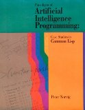

Databases - A New Frontier
Introduction
Some time in 2006 I wrote an introduction on the front page of defmacro. In it, I stated that (among other things) I am interested in "non-relational database management systems (AllegroCache, future iterations of ReiserFS), [etc.]" I never said anything about the topic since. The database innovation landscape is slightly different now than it was two years ago, but not by much. The main contender, ReiserFS, dropped out of the race because its creator decided to pursue other interests, but other than that everything is the same.
Recently I was contacted by the folks at Franz, who kindly offered to provide some support for Weblocks. Thanks to their support, I finally had a chance to play with AllegroCache. I was looking forward to playing with it for years, but never got the chance until now. After years of anticipation, I was pleasantly surprised - AllegroCache does not disappoint. This is very unusual, since long anticipation usually causes people to have unreasonable expectations. In this case, even my unreasonable expectations were met. The experience of playing with AllegroCache pushed me over the edge - it was time to write this article.
Explicitly stating an interest for non-relational technologies is a little misleading. It suggests contempt for relational databases. And the talk about innovation suggests RDBMSes are not innovative. Perhaps I started off on the wrong foot. Although my calculus is rusty, I am a mathematician at heart, and I can only admire the beauty and simplicity of relational algebra. Although modern databases are "pragmatized" versions of relational algebra, with much of its mathematical beauty stripped away, they appeal to me far more than most other tools.
It's not just relational algebra. There are other things going for traditional databases in terms of mathematical beauty and innovation. For instance, it is far from obvious that it is possible to implement all four ACID properties simultaneously, and occasionally I am still amazed at how lucky we got. It is also amazing that traditional RDBMSes are interactive, while almost all other mainstream tools are not. I can type queries, compile stored procedures, modify the schema, and get immediate results, all without restarting the database. I am still fascinated at how people take this functionality for granted but don't mind complete impotence of Java in this department (sorry, hot deploy does not melt my butter the way Query Analyzer does).
So what's missing? Why venture out to play with alternatives?
Limitations of Traditional Model
For one, modern database systems are not persistent, in a functional sense of the word. Recently there was (a justified) flurry of articles on undo functionality in web applications, and not a single one mentioned that database systems may be at fault. The cost of storage drops logarithmically with respect to time. It's hard to believe that storage technology designed when one kilobyte cost a dollar to store is still appropriate today. Relational algebra probably is - mathematics has no expiration date. But the implementation methods can't be.
This line of thinking quickly gets us to very dangerous territory. Undo functionality implies identifying each committed transaction uniquely (via some ID), and ability to rollback transactions at any time after they've been committed. "But transactions depend on each other!", I hear you scream. Yes, and that gets us to Darcs style patch theory - a mathematical formalism that allows automatically maintaining dependency information between transactions. I suppose this is easier to do with relations than with plain text files. In any case, there is a dissertation there somewhere.
Another issue with traditional relational databases is that they significantly limit the kind of information you can express. It is easy to define a table of people where each person has a first name, a last name, age, and a unique ID. It is slightly harder to elegantly represent incomplete information - people usually squint their eyes when they see a row with half the values set to null. However, it is almost impossible to have elegant and efficient representation of uncertainty. I can easily say that Bob is thirty years old, but I can't easily say that Bob is not thirty. Or, if I'm entering an insurance claim into my system from a written application and can't distinguish whether the first letter is a B or a W, there is no straight forward way for me to say that the client's first name is either Bill or Will. I can start designing my schema with this in mind, but it will very quickly become incredibly complicated and inefficient. Heaven save the poor bugger who'll have to write SQL queries to do anything with this database.
Ability to undo committed transactions and represent complex and uncertain information relationships is big, but is far less relevant to most people than the main culprit - the interface between databases and programming languages. Nobody likes JDBC or, God help us, ADO. So, people invented Hibernate and ActiveRecord - band aids for a river dam leak. These work, kind of. At least for the first week. Microsoft bit the bullet and added closures and limited type inference to C# in order to support LINQ - a step in the right direction (although Lisp had this feature, you know, forty years ago). A DSL for querying is nice - it finally makes the line between a database and a programming language blurry. But it's not blurry enough. Somehow it's still painfully clear when to stop thinking data structures 210 and start thinking databases 315. I like to play with the idea that a high level language, the kind people will use a hundred years from now, should have a hint of coercing me into momentarily forgetting about asymptotics.
Forgetting asymptotics brings us to query languages. As an interesting piece of trivia, SQL is the only popular programming language I am aware of that managed not to show up in a single religious flamewar. Perhaps this is because there is nothing else to discuss (actually, there is, but we'll get to that in a bit). However, people were unhappy with C++ when there was no Java, unhappy with Java when there was no Python, and unhappy with Fortran when there wasn't anything else. Lack of alternatives didn't stop them from complaining. Perhaps the biggest complaint about SQL is verbosity - even reasonably simple queries tend to take up half the screen. However, SQL has a deeper problem. As soon as you need to extract non-trivial information from the database, queries magically cease being declarative and begin looking like a regular imperative program in which the programmer meticulously specifies how to perform a computation. If only I had a penny for every time I saw a for loop in PL/SQL stored procedures...
AllegroCache
Why discuss AllegroCache? It certainly does not address all of the limitations discussed in the previous section, although some of the issues are addressed. The reason is that aside from being a very useful practical tool to solve certain types of problems, what AllegroCache does do, is provide a fundamentally different way to look at the problem - a way that without a doubt is worth learning. While it only scratches the surface of what's possible, it is a huge step in the right direction and is a great tool for illustrating some of the ideas above.
Let's introduce AllegroCache by using everyone's favorite subject - romantic relationships. First, we need to connect to the AllegroCache database. There are ways to use an embedded and a stand-alone version, but this article is about alien database technologies in general, not AllegroCache per se, so I'll whiz through this part:
(require :acache "acache-2.1.5.fasl") (use-package :db.allegrocache) (open-file-database "loveboat" :if-does-not-exist :create)
In order to represent relationships we need to define people that participate in them. We can do that by using CLOS classes, with a few minor modifications (a small price to pay for the cool stuff we're about to do):
(defclass person () ((name :index :any-unique :accessor person-name :initarg :name :initform nil) (likes :accessor person-likes :initform (make-instance 'ac-set)) (gender :accessor person-gender :initarg :gender :initform nil)) (:metaclass persistent-class))
There are three changes we've made to the class person to accommodate AllegroCache. First, we specified a metaclass persistent-class for the class person - a way for AllegroCache to weave its magic into Lisp (the metaobject protocol is worth an article or two or three on its own, so I won't talk about it here). Second, we've given the name slot an index any-unique which states that it can take any value as long as it is unique. We've also created a slot likes that will hold a collection of people a given person likes. However, instead of a list or a vector, it will hold a persistent set - one of AllegroCache constructs for storing large collections of objects (actually, AllegroCache supports lists and vectors as well, which are recommended for small collections over persistent sets, but for the sake of the example let's assume our characters just returned from Woodstock).
We're now ready to create a couple of people to illustrate how AllegroCache operates:
(setf bob (make-instance 'person :name 'bob :gender :boy)) (setf jane (make-instance 'person :name 'jane :gender :girl)) (setf mary (make-instance 'person :name 'mary :gender :girl))
We can also create a few relationships:
(add-to-set (person-likes bob) mary) (add-to-set (person-likes bob) jane) (add-to-set (person-likes jane) mary)
Note that at this stage in the dating game, nobody tied the knot yet. That's because AllegroCache is a transactional database and we're free to commit or rollback all changes we've made to persistent objects. Let's say Bob, Jane, and Mary are committed:
(commit)
We can now restart Lisp, open the database, and have our characters with their relationships loaded into the Lisp image safe and sound. We can also query our data. For instance, let's suppose we restarted Lisp (so the symbols bob and mary are no longer bound to their lawfully wedded values) and we want to find out if Mary is lucky enough to be liked by Bob:
(setf bob (retrieve-from-index 'person 'name 'bob)) (setf mary (retrieve-from-index 'person 'name 'mary)) (set-member mary (person-likes bob))
Piece of cake! We just use retrieve-from-index to find Bob and Mary, and call set-member to determine if Mary is lucky enough to be in the set of people Bob likes (which she is).
There is also retrieve-from-index-range which lets you perform more complicated queries, but querying this way is no fun - it is far from an improvement over SQL. Fortunately AllegroCache provides a different way to evaluate queries, a way which in my opinion really shines. But before we get into that, let's do a quick overview of a long forgotten beast - Prolog.
Prolog
Prolog is traditionally described as "a logic language". This definition has a plethora of interpretations and if you've never programmed in Prolog it'll likely confuse you more than help you. So, for a quick introduction to Prolog, it helps to think of it as a combination of three things:
- A database defined with a set of relations
- A language to query this database
- A curious mathematical property that makes Prolog a general purpose programming language
We can discuss these items by extending our relationships analogy to Prolog. Note, I will use the syntax for Allegro Prolog (which is also compatible with Peter Norvig's version of Prolog available on the internet for free, and which Allegro Prolog is based on). These examples can trivially be converted to a traditional Prolog environment. Before we get started, let's load Allegro Prolog into the Lisp image:
(require :prolog) (use-package :prolog)
Prolog - The Database
Suppose we would like to define a relationship between pairs of people. In particular, we would like to express that one person likes another. In Prolog we can do it like this:
(<- (likes bob mary))
Intuitively, we can think of this as a statement "Bob likes Mary". More formally, we can think of this clause as defining a binary relation likes that associates Bob with Mary. We can also think of it as a graph with two nodes and an edge between Bob and Mary. Let's define some more relationships between people:
(<- (likes bob jane)) (<- (likes jane mary))
For the sake of the example let's define another relation, this time an unary one, which defines which names in our database belong to girls:
(<- (girl jane)) (<- (girl mary)) (<- (girl julie))
Hmm, so far we haven't said anything about who Julie likes. Suppose she is in a transitional period, and happens to like anyone who likes girls. We can state it in Prolog like this:
(<- (likes julie ?x) (likes ?x ?y) (girl ?y))
Symbols that are preceded with question marks are variables. Variables have the same property as they do in regular mathematical equations - if a variable appears in more than one place it must mean the same thing in every place. So, if we have a variable x in two places, it must have the same value. Prolog can then solve for these variables with a unification algorithm.
In the example above (likes julie ?x), x refers to everyone in the database defined in the second place of the binary relation likes. Note that the variable x must mean the same person in (likes julie ?x) and (likes ?x ?y). Similarly, the variable y must mean the same thing in (likes ?x ?y) and (girl ?y). Intuitively, the clause above says that Julie likes some person x if there is some person y that x likes who is a girl. Or, as we said originally, Julie likes anyone who likes girls. Can you represent this information in a traditional database?
Prolog - The Query Language
We've now come to a point where we can ask a million dollar question. Whom does Julie like?
It turns out we've already seen everything we need to formulate our query. All we need is a query operator ?- and we can ask Prolog to find all people who are lucky enough to be objects of Julie's affection:
(?- (likes julie ?x))
Typing the query above into Allegro Prolog environment will give us the following answers:
CL-USER> (?- (likes julie ?x)) ?X = BOB ?X = BOB ?X = JANE ?X = JULIE ?X = JULIE ; ...
We get our answers! Julie likes Bob (who likes Jane and Mary), Jane (who likes Mary), and of course herself, because she likes girls. This is nice, but why do we get multiple answers?
So far we've thought of Prolog as a concise alternative to SQL, but Prolog is more than that. The secret lies in the fact that ?- is not just a query operator that looks information up in a set of records, it is also a reasoning engine that tries to prove predicates in order to find results we're looking for. For example, in order to find all people Julie likes according to the relation we specified for her, Prolog must look through all people we've defined, find the people they like, and prove that they're girls (by looking in the girls relation), to in turn prove that Julie likes them. In order to do this, Prolog must perform a search of the implicit graph of possibilities, pruning nodes where possible, and backtracking where necessary. This is why Bob shows up twice - because he shows up in the graph Prolog is visiting twice.
Note that the reasoning engine behind Prolog gives us more expressive power than SQL. In SQL we can specify the kind of data we want, and let the RDBMS figure out how to obtain it. However, if we want to obtain any information from our data that isn't explicit in its representation, we must code it up in a more traditional, procedural (or functional, if the flavor of SQL is any good) style. With Prolog, we can request complex reasoning to be performed in an entirely declarative style, and let Prolog figure out how to obtain the results that we need.
Of course this flexibility doesn't come for free. Prolog's reasoning engine can easily get caught in a combinatorial explosion of possibilities with no chance of ever returning a sensible solution set. Initially the discovery of this is slightly disappointing, but if we examine it further we'll find that it's not surprising. We can't expect Prolog to find solutions to intractable problems in polynomial time. The only reason why we may get into such a situation is that Prolog's expressive power occasionally allows us to pose intractable queries when, in fact, a tractable way to solve the problem is available. This can be considered a bug or a feature, depending on your point of view. In any case, Prolog is a different, interesting way to look at problems, and can be surprisingly useful in solving certain kinds of problems.
Programming Prolog
So far we've seen that Prolog allows us to define relations, and to reason over them to find solutions. However, by an interesting twist of mathematical fate, Prolog turns out to be capable of general purpose programming. The mathematical justification is that Prolog is equivalent to Horn Clauses and they turn out to be Turing complete. Therefore, Prolog operators outlined above are sufficient to express any computation that can be computed by a Turing machine. Effectively, this means Prolog is a general purpose programming language.
Expressing general programs in Prolog is a large topic, that quickly gets outside the scope of this article (and my area of competence). So, I'll limit this section to a brief example - calculating the Fibonacci sequence. The sequence can be calculated with the following Prolog code:
(<- (fib 0 1))
(<- (fib 1 1))
(<- (fib ?i ?f)
(lispp (> ?i 1))
(is ?i1 (- ?i 1)) (is ?i2 (- ?i 2))
(fib ?i1 ?f1) (fib ?i2 ?f2)
(is ?f (+ ?f1 ?f2)))
The first two clauses are rather self-explanatory. The third clause, once you get past initial horror, is also rather simple. To calculate a Fibonacci number of sequence item i greater than one, we bind variables i1 and i2 to i - 1 and i - 2 respectively. We then compute Fibonacci numbers for these respective indices, binding them to f1 and f2, finally summing f1 and f2 to get the result f.
We can now query our knowledge-base to find Fibonacci numbers:
CL-USER> (?- (fib 0 ?x)) ?X = 1 CL-USER> (?- (fib 1 ?x)) ?X = 1 CL-USER> (?- (fib 10 ?x)) ?X = 89
Phew. We now know enough about Prolog to query our AllegroCache database.
Querying AllegroCache
First let's load an extension to Allegro Prolog that requires querying AllegroCache:
(require :pcache)
To query our persistent database using Prolog we can use a db functor that accepts a class name, an instance variable (to be unified), and optional slot constraints. Let's do the simplest thing possible - find out who's in the database:
CL-USER> (?- (db person ?x)) ?X = #<PERSON oid: 12, ver 5, trans: 7, not modified> ?X = #<PERSON oid: 15, ver 5, trans: 7, not modified> ?X = #<PERSON oid: 17, ver 5, trans: 7, not modified>
We can also query AllegroCache database by specifying slot values. For example, let's find all the girls:
CL-USER> (?- (db person ?x gender :girl)) ?X = #<PERSON oid: 15, ver 5, trans: 7, not modified> ?X = #<PERSON oid: 17, ver 5, trans: 7, not modified>
Or, let's find Mary:
CL-USER> (?- (db person ?x name mary)) ?X = #<PERSON oid: 17, ver 5, trans: 7, not modified>
Of course we can also use Prolog to learn everything we ever wanted to know about romantic interests of the inhabitants of our digital world. For example, let's rewrite our example if Mary is liked by Bob in Prolog:
CL-USER> (?- (db person ?b name bob likes ?l) (db person ?m name mary) (lispp (set-member ?m ?l))) ?B = #<PERSON oid: 12, ver 5, trans: 8, not modified> ?M = #<PERSON oid: 17, ver 5, trans: 8, not modified> ?L = #<AC-SET oid: 14, ver 5, trans: 8, not modified>
The reasoning engine gives us values that match the query! Mary is indeed liked by Bob!
As interesting as the above examples already are, this is peanuts compared to what we can do with AllegroCache coupled with Allegro Prolog. We can use full power of Prolog's reasoning engine to define and query relationships within the object database itself! We have enough firepower in our arsenal to recreate the example of infamous Julie - the girl who likes everyone who likes girls.
Let's define a rule to represent Julie's interests in context of our object database:
CL-USER> (<- (likes julie ?n) (db person ?x name ?n likes ?l) (db person ?y gender :girl) (lispp (set-member ?y ?l)))
There. We just said that Julie likes a person ?x named ?n if there is a girl ?y who ?x likes. We've integrated Prolog's rule definitions, querying, and reasoning capabilities with AllegroCache's object oriented database! Looks like Julie could teach LINQ a couple of lessons.
Limitations
Documentation of Allegro Prolog's db functor has the following quote:
If the first slot is indexed and the first value is fully grounded, retrieval uses AllegroCache's indexing and is fast. Otherwise retrieval may need to iterate over all instances of the class. Improvements in this simple indexing strategy may be explored in future releases.
This means that while our queries for all girls and for Mary are fully supported by indexing, the more complex queries that really take advantage of Prolog's reasoning engine are not. This is unfortunate, as it severely limits usage of Allegro Prolog on large databases. Hopefully Franz addresses this problem in future versions of Allegro Prolog.
What's Next?
When I showed a draft of this article to friends that deal with databases a lot, many of them asked me the same thing - "why on Earth would I want to specify that Bob is not thirty?" People get the value of undoing committed transactions, having a closer integration between databases and programming languages, even using alternative query languages. However, more powerful data representation facilities don't appear useful. I think this is a case of the Blub syndrome. We don't need this feature because we don't have it, just like investors that turned down Xerox couldn't understand why anyone would want to copy documents. However, once the copy machine was invented, it took the world by storm.
Database technologies are very close to the bottom of the technology stack. This means that to a large extent, all software designed on top of a database will be limited by the features the database provides. It is no surprise that most web software is just a pretty interface for CRUD. More powerful databases will enable very different applications - the kinds that are hard to envision today. While the big players are trying to revolutionize the browser, the database is waiting its turn.
Comments?
If you have any questions, comments, or suggestions, please drop a note at coffeemug@gmail.com. I'll be glad to hear your feedback.